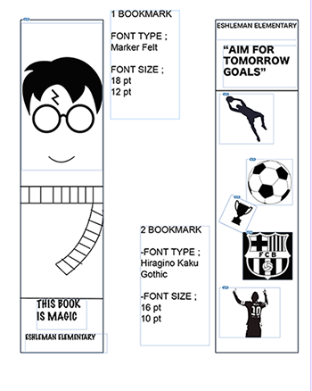

Javier Valdez Print Project |
||
| Home Print Project Photo Project Video Project | ||
|

More Photos at Book Mark Project |
For this project, we were tasked with gaining a comprehensive understanding of the printing process and the mechanics of how printers operate. This knowledge was essential because our main objective was to design and produce a series of bookmarks intended for elementary school children. To achieve this, we utilized Adobe InDesign, a professional desktop publishing software, to create our designs. We paid close attention to the specific measurements and layout requirements provided, ensuring that our bookmarks would be both visually appealing and appropriately sized for young readers.
Given the target audience, I aimed to select themes that would resonate with children and spark their interest in reading. I designed one bookmark featuring elements from the Harry Potter series, incorporating iconic imagery and motifs that fans of the books would recognize and appreciate. For the second bookmark, I chose to highlight soccer, my favorite sport, by including dynamic visuals and symbols associated with the game. This project not only allowed me to apply my technical skills in design and printing but also gave me the opportunity to create engaging materials that could inspire a love for reading among young students. |
|
|
© 2025 Javier Valdez | ||